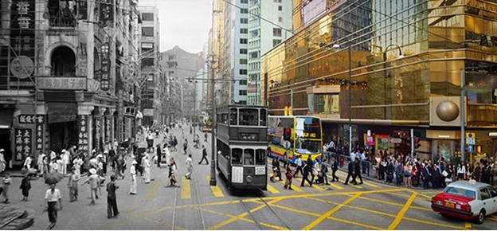
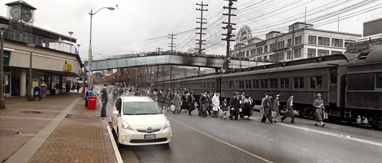
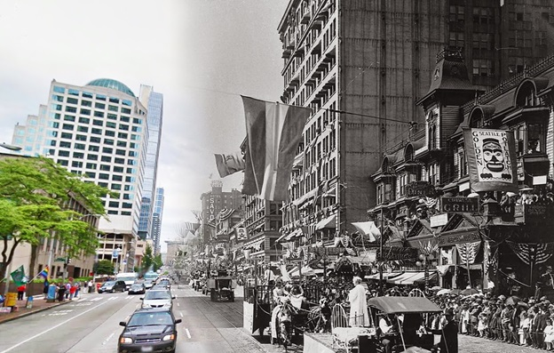

Related Works
The body of work similar to Visual Timeline is very limited, and the results are mostly achieved by using Photoshop.
Figure 2.1: A final image from the HSBC 150 year anniversary advertising campaign in which photos were staged and the photographer manually cut together the images to create the desired historically contrasting output image.
Figure 2.2: An image blended from the year 1942 and the present of the same scene using Photoshop.
Figure 2.3: An image blended from the year 1913 and the present of the same scene using Photoshop.